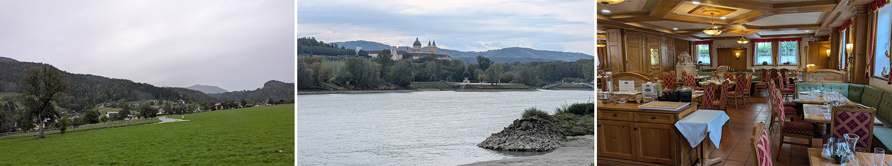
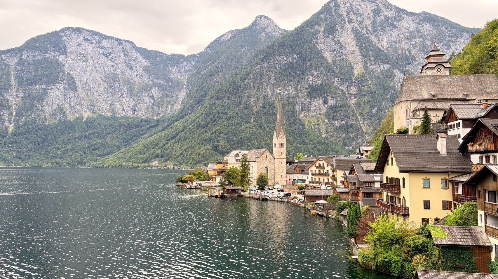
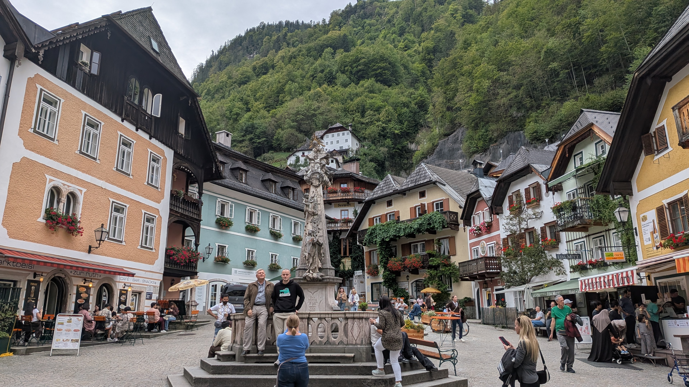
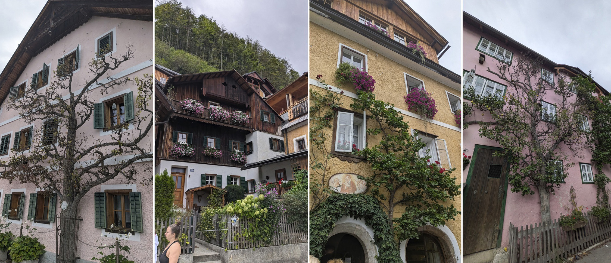
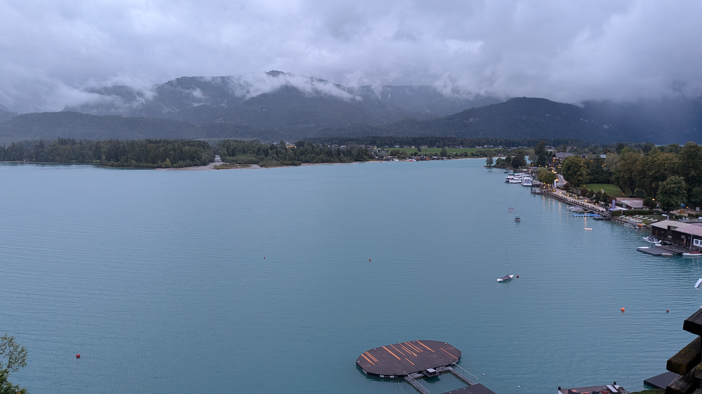
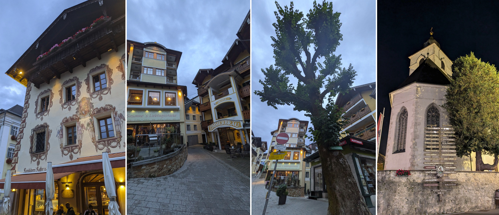
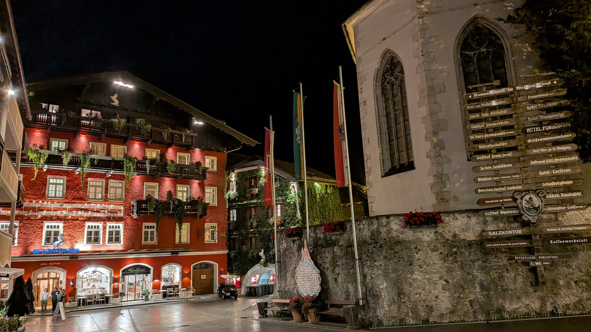
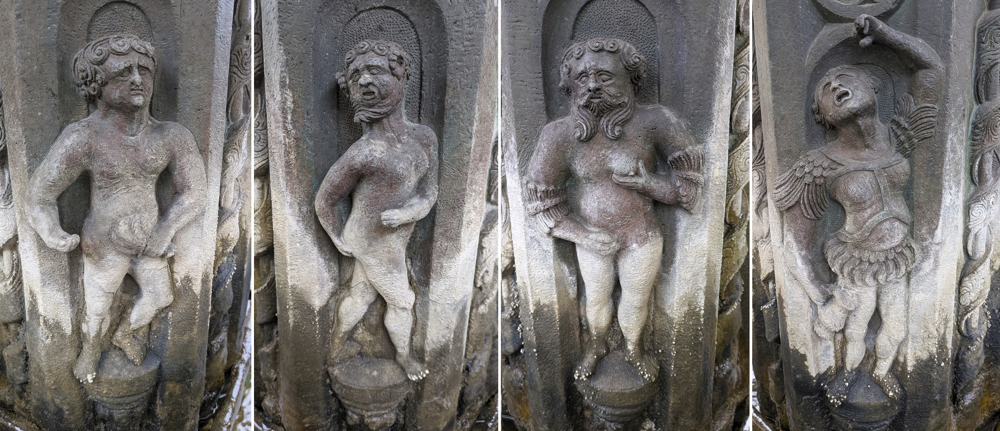
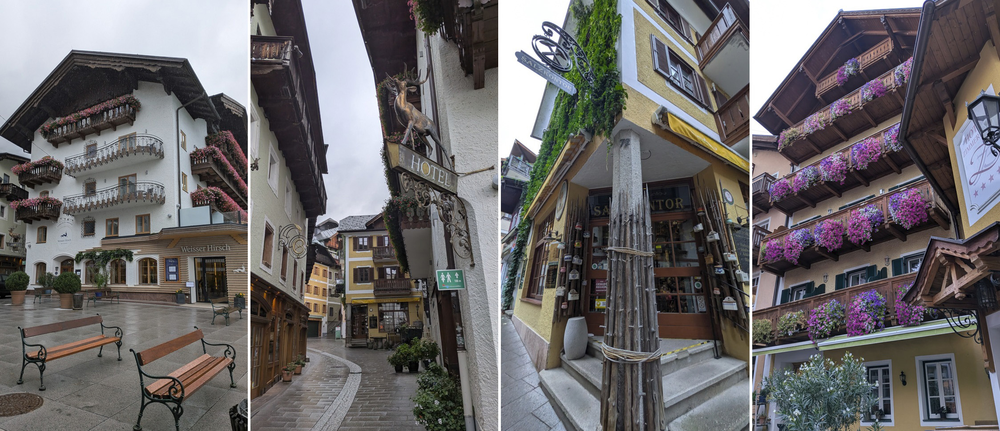

走進奧地利的童話世界，從哈斯達特到沃夫岡湖
跨越十幾個小時的飛行，我們終於抵達奧地利。從多瑙河畔的初見、哈斯達特的湖光山色，到沃夫岡湖畔的浪漫夜晚，蜜月旅行的第一頁，就在風景與幸福之中緩緩展開。
抵達維也納，蜜月旅程正式啟程
蜜月旅行，讓人期待能暫時放下日常的忙碌，與最重要的人一起享受浪漫而愜意的時光。於是，我們選擇參加蜜月旅行團，前往嚮往已久的奧地利與捷克，展開人生中一段特別的旅程。
經過十幾個小時的飛行，我們終於在清晨八點多抵達維也納。順利通過海關後，領隊先帶大家前往一間充滿奧地利鄉村風情的餐廳用餐。這也是我們第一次與團員們同桌吃飯，認識來自台灣不同地方、同樣帶著期待踏上蜜月旅程的新人。大家聊著彼此的相識過程與婚禮點滴，陌生感很快就被歡笑取代，為旅程揭開溫暖的序幕。
餐後，領隊帶大家到附近的多瑙河畔拍照留念。當時天空雖然陰沉，河畔的風也有些強勁，卻絲毫沒有影響大家的好心情。對剛抵達歐洲的我們而言，眼前的一切都充滿新鮮感，而蜜月旅行，也終於從想像走進了現實。
286 公里的公路風景，遇見年輕的司機
接下來，真正的長途移動開始了！我們將搭乘遊覽車，行駛約 286 公里，前往此行期待已久的第一個景點—哈斯達特（Hallstatt）。
沿途盡是令人心曠神怡的奧地利田園風光。一望無際的綠色草地、散落其間的小屋，以及遠方起伏的山巒，彷彿童話故事裡才會出現的場景。看著窗外不斷變換的景色，旅途的疲憊似乎也減輕了不少。
這幾天負責駕駛遊覽車的，是一位來自布拉格、年僅 22 歲的高挑帥氣青年。他的爺爺與爸爸都是司機，彷彿將對駕駛的熱情一代代傳承下來。他自己也十分熱愛這份工作，雖然年紀輕輕，還在求學階段，卻已經清楚知道自己喜歡什麼。
更令人印象深刻的是，他開車時總是謹慎而沉穩，完全沒有一般人對年輕駕駛可能抱持的浮躁印象，讓乘客們多了幾分安心。
這趟旅程也讓我見識到歐洲對遊覽車駕駛工時與行車安全的嚴格規範。駕駛必須使用專屬的數位紀錄設備，行駛速度、駕駛時間與休息時間都會留下紀錄，並受到相關規定的限制與查核。原本以為行程安排得如此精準，只是旅行社規劃得好，沒想到背後還有一套嚴謹的安全制度。
長途行車途中，司機也會安排大家在休息站稍作休息。對習慣台灣便利生活的我們而言，歐洲不少休息站的廁所需要付費，確實得花點時間適應。不過，連休息站都帶著濃濃的歐洲鄉村風格，整潔而別緻，倒也讓短暫的停留成了旅途中另一種風景。
 |
| 沿路公路景色。 中途休息公路旁 — 多瑙河。 鄉下餐廳。 |
哈斯達特：彷彿走進風景明信片
下午四點多，我們終於抵達第一個目的地—哈斯達特（Hallstatt）。
這座位於奧地利阿爾卑斯山區、依山傍湖的古老小鎮，於 1997 年列入 UNESCO 世界文化遺產名錄。小鎮規模不大，傳統木造建築沿著山坡錯落分布，搭配湖泊與群山，構成令人難忘的景致。
不過，這裡的寧靜也面臨觀光帶來的考驗。由於遊客眾多，領隊特別提醒大家，進入小鎮後要放低音量、保持禮貌，盡量不打擾當地居民的生活。旅行的意義，不只是欣賞美景，也包括學習尊重當地的文化與日常。
 |
| 明信片小鎮 - 哈斯達特（Hallstatt）。 |
哈斯達特最令人著迷的，莫過於沿著山壁層層排列的傳統建築，以及教堂尖塔與湖面倒影交織而成的經典畫面。漫步在石板街道上，眼前的一切彷彿被按下了慢速播放鍵，讓人不自覺放慢腳步，細細欣賞這座小鎮的美。
抵達大家熟悉的明信片取景地後，我們沒有急著折返，而是繼續往小鎮深處探索。比起拍下那張必備的觀光照，我更喜歡在巷弄間隨意走走，看看不同角度的建築、窗台上的花草，以及那些藏在轉角處、不經意映入眼簾的風景。
歐洲小鎮似乎有一種獨特的魔力。那些帶著歲月痕跡的房屋、彎曲的街道與色彩各異的店面，總讓人忍不住想多走幾步，期待下一個轉角還會遇見什麼驚喜。
可惜，當地商店大多在傍晚五點多便陸續打烊。我們剛抵達時，還能看見遊客進出店家，等到回程經過，街上的商店已經紛紛關門。雖然沒能好好逛上一輪，卻也因此看見了另一種不同的風貌：少了熱鬧的人潮，櫥窗裡精緻的擺設依然靜靜展示著各自的特色，彷彿在等待下一位有緣人。
 |
| 鎮中心市集 — 矗立著黑死病記念碑。 |
時間總是過得特別快。即使心裡還有些依依不捨，我們仍得在集合時間前離開，繼續前往今晚的住宿地點。短短一段停留，卻已足夠讓哈斯達特成為這趟旅程中難以忘懷的第一站。
 |
| 房子外總是種滿植物。 |
沃夫岡湖畔的浪漫夜晚
離開哈斯達特後，我們前往位於聖沃夫岡湖區的四星級設計飯店 Scalaria，準備在這裡度過蜜月旅行的第一個夜晚。
如果說哈斯達特像是一幅古典的風景明信片，那麼 Scalaria 就像是藏在自然美景中的現代設計空間。飯店融合簡約俐落的設計與時尚感，大廳散發著沉穩而優雅的氛圍，客房則兼具舒適與現代感，與沿途看見的傳統奧地利木造建築形成鮮明對比。
最讓人驚豔的，當然還是房間的景觀。推開房門，大片落地窗與觀景陽台映入眼簾，沃夫岡湖（Wolfgangsee）的湖光山色就在眼前展開。湖水、山巒與天空相互映襯，彷彿把整片風景都搬進了房間。那一刻，長途飛行與舟車勞頓似乎都不再重要，只想靜靜站在陽台上，把眼前的美景好好收藏。
 |
| 房間窗外景色。 |
飯店還設有臨湖的水域空間與浮動平台。天氣合適時，旅客可以親近湖水、享受日光浴，或只是坐在湖畔，看著陽光灑落在阿爾卑斯山腳下的湖面。即使什麼事都不做，光是待在這樣的環境裡，就已經是一種享受。
而最令人感到幸福的，是飯店特別為蜜月團準備的小驚喜—床上擺放著紅色的小愛心，簡單卻充滿巧思。旅行中的浪漫，不一定需要盛大的安排，有時只是一個貼心的小細節，就足以讓人記在心裡很久。
白馬飯店：邂逅百年浪漫地標。
晚餐時間，領隊帶著大家步行前往附近的義大利餐廳。沿途再次映入眼簾的，是聖沃夫岡小鎮充滿鄉村風情的建築，讓人即使只是走在街道上，也能感受到這座湖畔小鎮的獨特魅力。
途中，我們還看見了當地著名的地標—白馬飯店（Im Weissen Rössl）。 這座歷史悠久的旅館，因與同名輕歌劇《白馬客棧》相關的文化魅力而廣為人知。醒目的白馬標誌與特色外觀，讓它成為聖沃夫岡極具代表性的景點之一。經過這裡時，大家自然不會錯過拍照留念的機會。
雖然這次沒有入住白馬飯店，但能親自走到這座充滿音樂與浪漫色彩的文化地標前，與它合影留念，也算為旅程留下另一個值得回味的畫面。
 |
| 沃夫岡湖區小鎮。 |
 |
| 白馬飯店（Im Weissen Rössl）。 |
蜜月的第一個夜晚，晚安，奧地利
從台灣出發，經歷十幾個小時的飛行，再搭乘遊覽車一路奔波，我們終於抵達奧地利，迎來蜜月旅行的第一個夜晚。
回想這兩天，從維也納的初抵、沿途的田園風光，到哈斯達特如夢似幻的小鎮景色，以及沃夫岡湖畔令人屏息的湖光山色，每一段路程都為這趟旅程增添了不同的色彩。
旅行的美好，或許不只是看見多少著名景點，而是能與身旁最重要的人一起經歷那些第一次：第一次踏上陌生的國度、第一次在童話般的小鎮漫步，也是第一次在遠離日常生活的地方，安靜地享受只屬於兩個人的時光。
今晚，終於可以躺在舒服的床上，好好休息、調整時差，為接下來的旅程儲備體力。
窗外是寧靜的沃夫岡湖，身旁是一起走過人生新階段的伴侶。
蜜月的故事才剛開始。
晚安，奧地利。
也期待接下來的每一天，都能繼續收藏風景、驚喜與幸福。
 |
| 早安！沃夫岡湖區小鎮有趣的雕刻小人。 |
 |
| 穿梭小鎮。 |
音樂創作
D1&D2 《哈斯達特 聖沃夫岡》.mp3
歌詞：
[Intro]
（ukulele strum, light guitar picking, finger snaps）
喔 喔喔喔喔～
[Verse 1]
桃園機場 晚上十點四十
飛機一直飛 飛過了六個時差
降落的時候 天空剛剛亮
維也納說 早安 你來啦
[Pre-Chorus]
風車在田裡 慢慢轉呀轉
十八度的風 吹進車窗裡面
司機先生 Vlastik 你好嗎
載我們去看 那片湖水藍
[Chorus]
Danke schön 我學會了說
阿不多了 喝一口就笑了
杏桃蛋糕 甜甜的午後
維也納炸豬排 果醬拌一拌
喔～ 這滋味 忘不了
[Verse 2]
哈斯達特 小小的鎮
八百個人 卻擠滿全世界的人
鹽礦躲在 山的心臟裡
教堂尖尖的 刺向那藍天
[Pre-Chorus]
路德的塔 聖瑪利的鐘
歌德式的尖 文藝復興的對稱
巴洛克說 我要美美的
洛可可笑 那我要更多
[Chorus]
Danke schön 我學會了說
阿不多了 喝一口就笑了
杏桃蛋糕 甜甜的午後
維也納炸豬排 果醬拌一拌
喔～ 這滋味 忘不了
[Bridge]
（acoustic guitar solo, light clapping rhythm）
沃爾夫岡湖 白馬在唱歌
Scalaria 的夜晚 星星在說話
義大利麵 比薩端上桌
同桌的朋友 笑聲不用假
[Final Chorus]
Danke schön 我又說了一遍
阿不多了 好像捨不得說再見
1965 十月的鐘聲
在阿爾卑斯山 輕輕地迴盪
[Outro]
（ukulele fade, whistle melody, claps slow down）
喔 喔喔喔喔～
這一趟旅行啊 忘不了